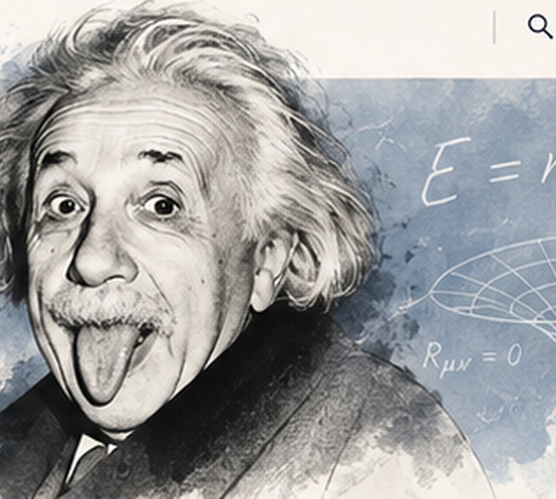

Music & Violin
Einstein loved classical music, especially Mozart, and enjoyed playing the violin throughout his life.
CREATIVITYSCIENTIST · THINKER · EXPLORER
Exploring the mysteries of the universe, one question at a time. Science, imagination, and a belief in a better world.

“Imagination is more important than knowledge.”— Albert Einstein
ABOUT ME
I am a theoretical physicist whose curiosity led me to explore the nature of space, time, light, and gravity. I believe imagination and thoughtful questions can transform the way we see the world.
Beyond science, I enjoy music, especially playing the violin, and spending time sailing.
Learn MorePUBLICATIONS
A selection of Einstein's influential works. To add a publication, add another object to the papers array in script.js.
BEYOND THE LABORATORY
Einstein was more than a scientist. Music, sailing, and thoughtful conversations were important parts of his everyday life.
Einstein loved classical music, especially Mozart, and enjoyed playing the violin throughout his life.
CREATIVITYHe loved spending time on the water. Sailing offered a peaceful escape from the demands of scientific work.
RELAXATIONHe explored philosophy and spoke publicly about peace, civil rights, and the responsibility of scientists.
CURIOSITYDid you know? Einstein began violin lessons as a child. He continued making music well into adulthood.
LATEST BLOG
A REFLECTION ON CURIOSITY
Great discoveries begin with a question. Curiosity, careful observation, and creativity help us see the universe in new ways.
Science is more than a collection of answers. It is a willingness to keep asking questions, challenge assumptions, and test ideas against evidence. The next discovery may begin with an ordinary observation and an extraordinary question. This is an illustrative website blog entry, not an authentic Einstein article.